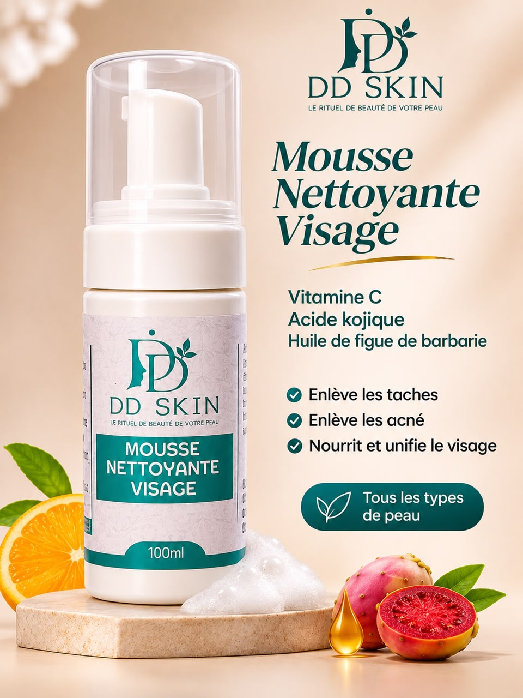

Visage · Tous types de peau
Mousse Nettoyante Visage DD SKIN — 100 ml
Enrichie en vitamine C, acide kojique et huile de figue de barbarie, elle aide à nettoyer la peau, à atténuer l’apparence des taches et des imperfections, tout en contribuant à nourrir et à unifier le teint.
- Aide à atténuer les taches.
- Aide à réduire les imperfections liées à l’acné.
- Nourrit et contribue à unifier le teint.
- Convient à tous les types de peau.
10 000 F CFA
Commander sur WhatsAppDisponible à Dakar, Sénégal.